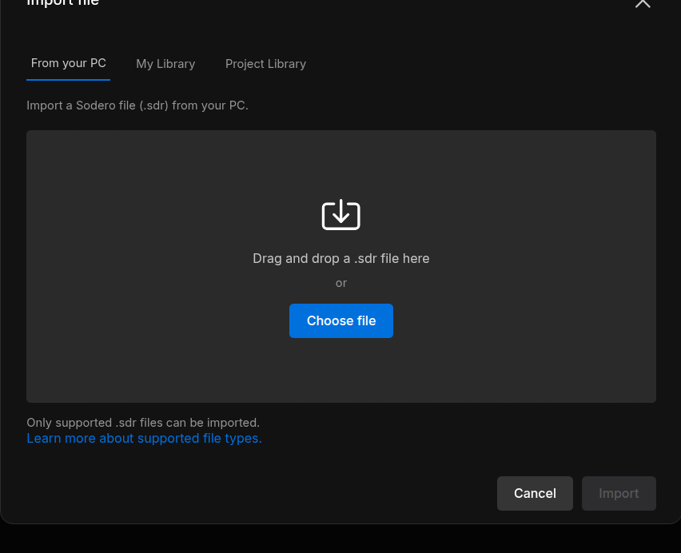
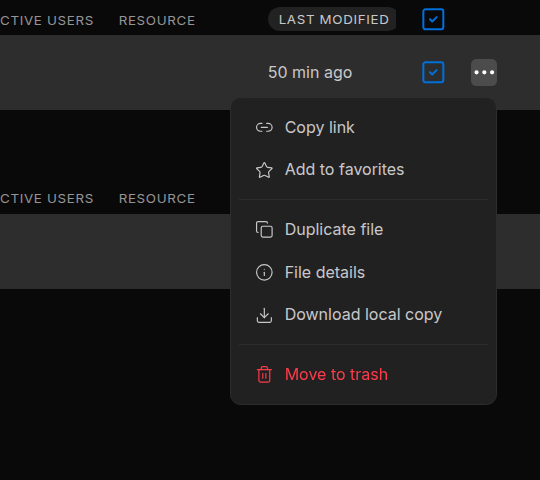

Robot Systems and Robot Worlds¶
A project holds two kinds of file: Robot Systems, which run robot software in Stellar Station, and Robot Worlds, which simulate the place where the robots work.
| File | What it is | Edit it in | Work with it live in |
|---|---|---|---|
| Robot System | One Stellar Station ("the Station"): its node graph, documents, settings and apps | Station · Edit | Station · Live |
| Robot World | A simulated environment: a scene with your robots, the ground and lighting | Studio | Theater |
Design documents, such as gateway documents (.gw) and robot documents (.sdd, .sddm, .sdda), are not project files: they live inside a Station or in a library.
1. Create a File¶
- In the project, click New file. An empty project also offers Create new file.
- Choose Robot System or Robot World and click Next.
- Enter a File Name (up to 20 characters) and, if you like, a Description (up to 40 characters).
- For a Robot System, choose its Starting apps.
- Click Create. The new file appears in its table, Inactive.
Starting Apps¶
Starting apps offers bundles of Store apps for the new Station: Empty (No apps; install what you need from the Store.), Manipulator, Mobile robot and Legged. The apps install when the Station first starts. If some apps could not be added, the portal names them: install them from the Station's Store (Apps and Packages).
A new Robot World has no scene yet. Open it with Studio to build one (Studio); until then it has nothing to run.
2. Import an .sdr File¶
A Sodero file (.sdr) holds one Robot System or one Robot World. Importing it creates a new file in the project, with the name and description stored in the .sdr.
- In the project, click Import. An empty project also offers Import file.
- Choose the source: From your PC (drag the file onto the dialog, or click Choose file), My Library or Project Library.
- Click Import.


The new file appears under Robot Systems or Robot Worlds, depending on what the .sdr holds.
Move Robot Systems Between Stellar X and Sodero Cloud¶
A Robot System moves as an .sdr file between Sodero Cloud (Download local copy, Import) and a Stellar X controller (Export SDR, Load SDR):
- From Stellar X: export the Station on the controller with Export SDR, then import the file into a project.
- To Stellar X: download a local copy of the Robot System, then load it on the controller with Load SDR (Backup and Restore in the Stellar X manual).
Check the release and the apps. The destination must run a Station release that accepts the file's graph and documents (Compatibility). An .sdr does not contain installed packages: after importing one from Stellar X, install the apps its nodes need; before loading one on Stellar X, install the packages the Station uses on the controller.
A Robot World's .sdr opens in Sodero Cloud only.
3. File Actions¶
The ⋯ button at the end of a file's row opens its menu.


| Item | Shown to | Does |
|---|---|---|
| Copy link | Everyone | Copies the project's link; a file has no page of its own |
| Add to favorites | Everyone | Lists the file under Favorites on Home |
| Duplicate file | Editors and managers | Copies the file in the same project, for example jackal copy. A Station copy keeps its documents and apps. |
| File details | Everyone | The file's information. Editors and managers can change its name, description and icon color here. |
| Download local copy | Managers | Saves the file as an .sdr (Download a Local Copy) |
| Move to trash | Editors and managers | Moves the file to Trash after you confirm. An active file is deactivated first, and a Station saves its data on the way down. |
An official Sodero World cannot be duplicated. A World that uses official Sodero files is copied without them: add those assets to the copy again in Studio. To bring back a trashed file, restore it from Trash (Move to Trash, Restore and Delete).
4. How Robot Worlds and Robot Systems Work Together¶
The Robot Systems of a project drive the robots in the project's active Robot World. You do not enter any address.
- One active World per project. A project can hold several Robot Worlds, but while one is active, the others cannot be activated (Another Robot World is already running in this project).
- Active Stations connect automatically to the project's active World, including their camera and IMU gateways. A Station activated before the World connects once the World is up.
- Robots are matched by name. A simulation gateway drives the robot named in its gateway document (Robot name): the name of the robot's articulation prim in the World, for example
jackal. Use one gateway per independently controlled robot or joint group, and avoid overlapping actuator ranges. - Projects stay apart. A Station never reaches a World in another project. Keep the World and the Robot Systems that drive it in the same project.
Step by step: Drive Robots in the World.